Камеры
Детальное изображение и встроенная аналитика, в том числе в базовых моделях.
ПодробнееTRASSIR — оборудование и программное обеспечение
Объединяйте камеры, видеоархив и видеоаналитику в одной системе — от отдельного объекта до сети филиалов.
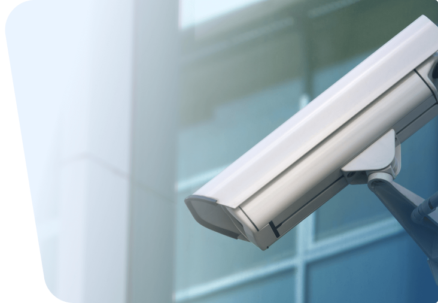
Продукты TRASSIR
Оборудование и программное обеспечение для записи видео, работы с событиями и автоматизации безопасности бизнеса.
Детальное изображение и встроенная аналитика, в том числе в базовых моделях.
Подробнее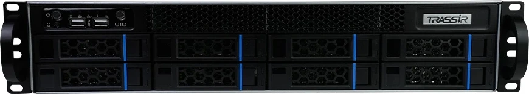
Запись и хранение видео, обработка аналитики и резервирование.
Подробнее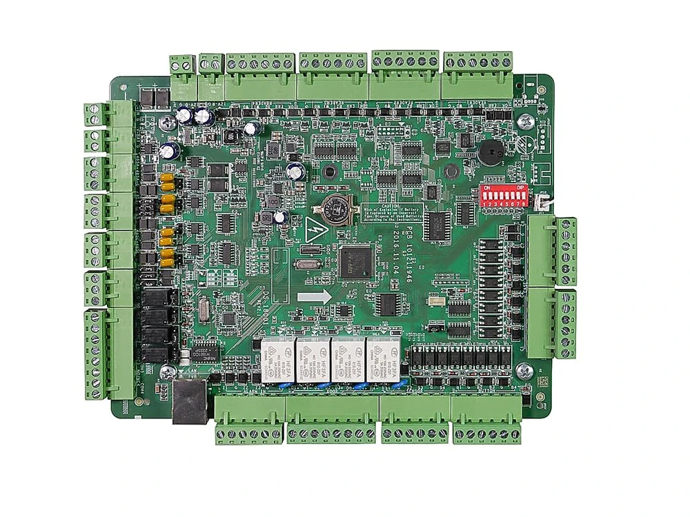
Контроль прохода сотрудников и единое управление доступом.
Подробнее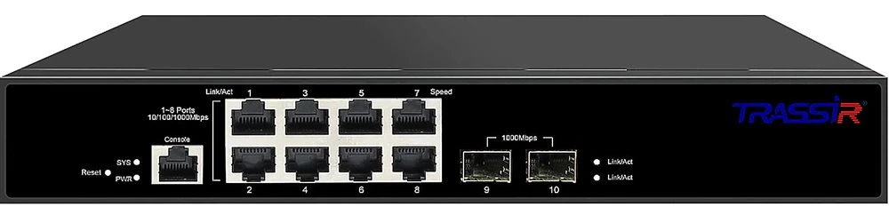
Подключение и питание камер. Сеть, рассчитанная на видеонаблюдение.
ПодробнееВыберите направление, чтобы увидеть интерфейс и основные задачи.
TRASSIR VMS
Видеопотоки и архив, управление камерами, аналитика и интеграции. Масштабируемая система с резервированием и гибкими сценариями работы.
О продукте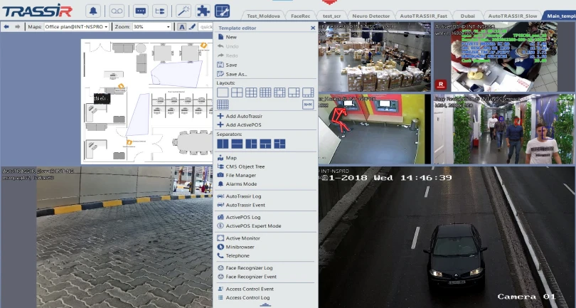
TRASSIR PSIM
События от систем безопасности, видео и карты, инструкции и приоритеты. Контроль реагирования и отчёты о действиях сотрудников.
О продукте
TRASSIR CMS
Состояние камер и серверов, уведомления о сбоях и отчёты о работоспособности. Централизованное управление, обновление серверов и работа в частном облаке.
О продукте
Видеоаналитика TRASSIR
Обнаружение людей и транспорта, распознавание лиц и номеров, контроль перемещений и рабочих процессов. Аналитика на сервере и в облаке.
О продукте
TRASSIR Cloud
Удалённый просмотр и облачное хранение видео. Подключение камер и расширение функций системы с помощью облачных сервисов.
О продукте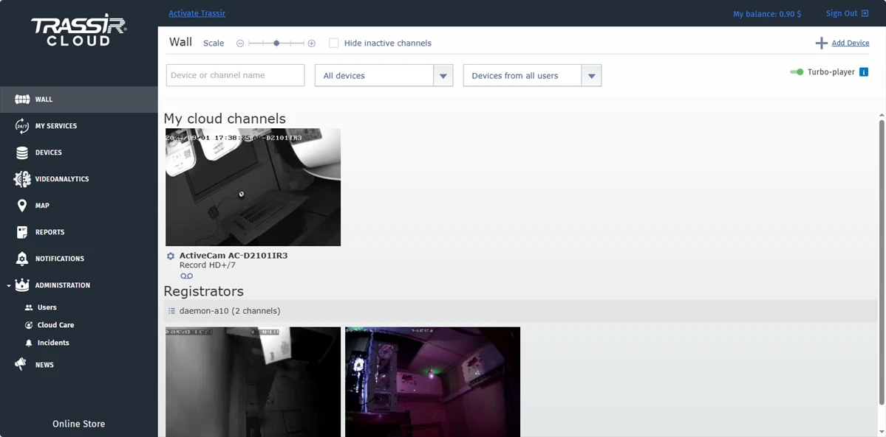
ИнтеграцииПодключайте сторонние системы безопасности и обменивайтесь данными с корпоративными системами.
Развитие системыДобавляйте устройства и аналитику, объединяйте объекты по мере роста бизнеса. Сохраняйте совместимое оборудование при расширении функций.
РазмещениеЛокально, в частном или публичном облаке — с учётом требований к данным и удалённому доступу.
DSSL — российский поставщик систем физической безопасности с сетью офисов и складов. Поможет подобрать оборудование, рассчитать проект и оформить заказ.
Сценарии работы

Охрана периметра, контроль прохода сотрудников и въезда автомобилей. На экране — пример обнаружения объектов видеоаналитикой TRASSIR.
TRASSIR PSIM объединяет тревоги, видео, место события и инструкции для оператора. Сотрудник видит, что произошло и как действовать.
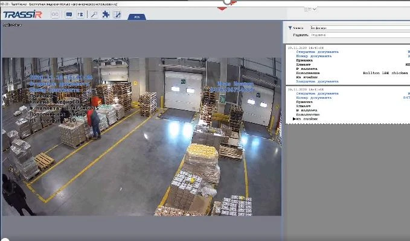
Аналитика отслеживает присутствие сотрудников в рабочих зонах. Видео и события помогают проверять соблюдение процессов и разбирать спорные ситуации.
TRASSIR CMS показывает состояние камер и серверов в филиалах, помогает обнаруживать сбои и централизованно управлять системой.
Отраслевые решения
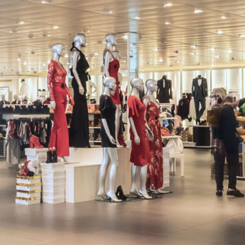
Кассовые операции, посетители и работа персонала.
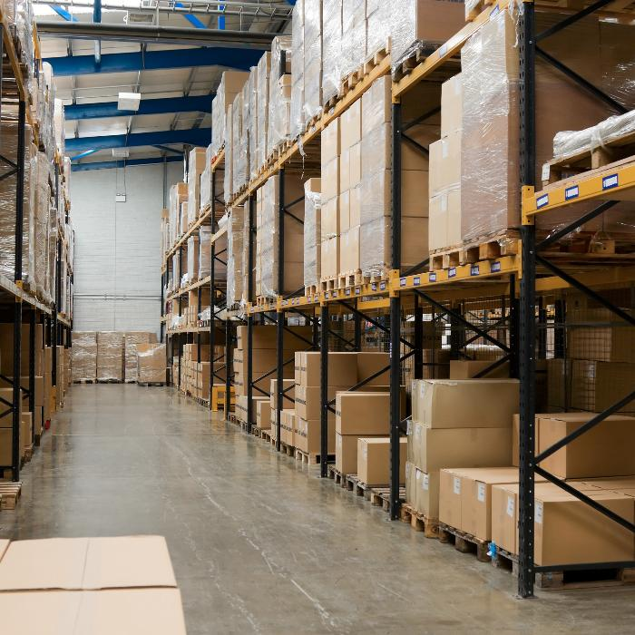
Движение товаров, погрузка и проезд транспорта.
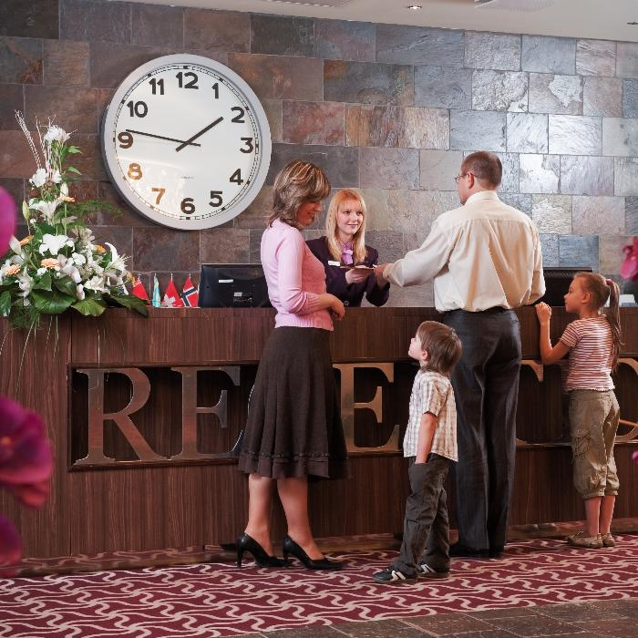
Безопасность гостей и контроль обслуживания.
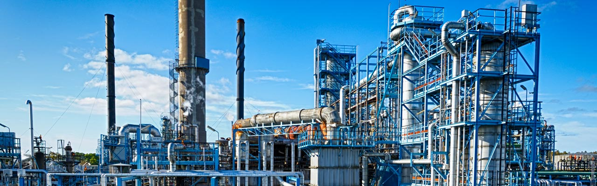
Периметр, доступ и производственные операции.
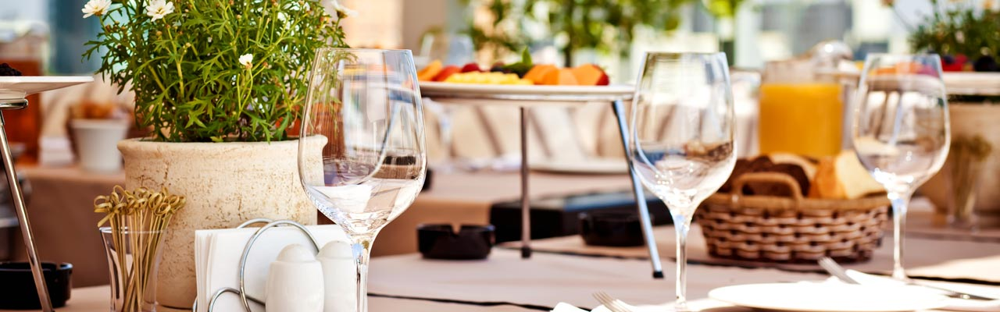
Кассовая дисциплина и стандарты работы.
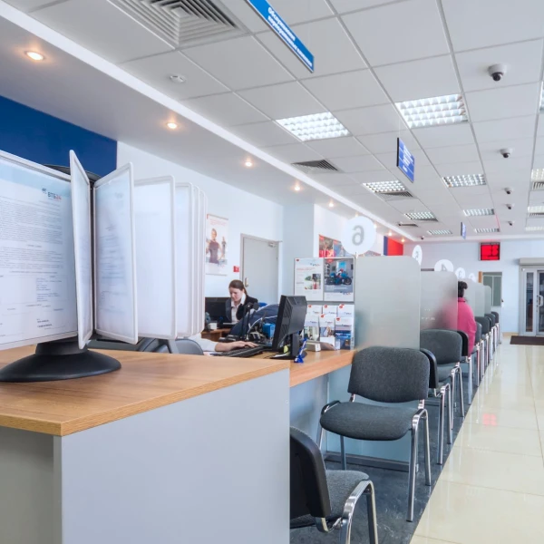
Кассовые операции и доступ в защищённые зоны.
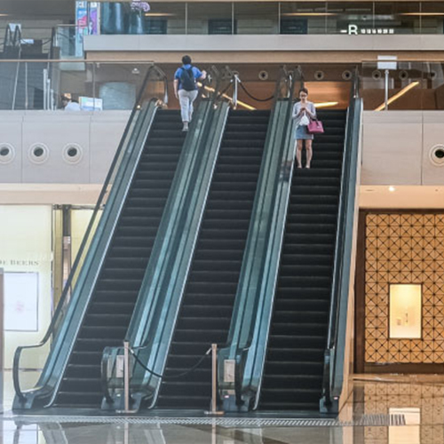
Потоки посетителей и безопасность общих зон.
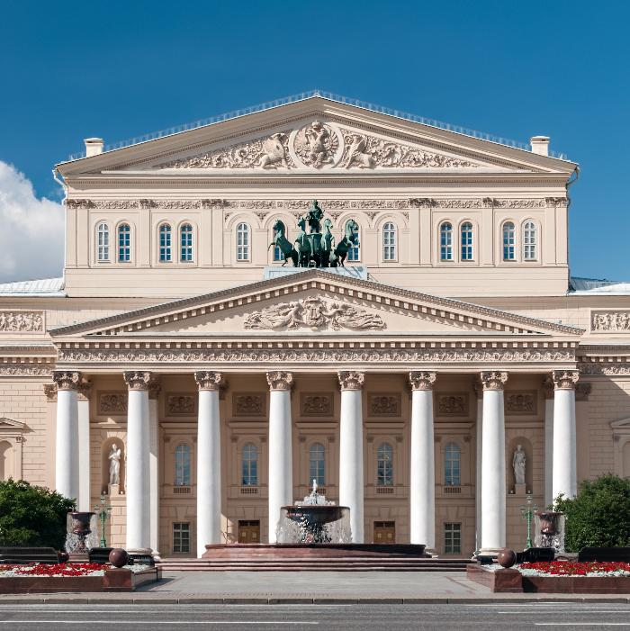
Контроль входа и безопасность посетителей.
Разработка, производство и качество
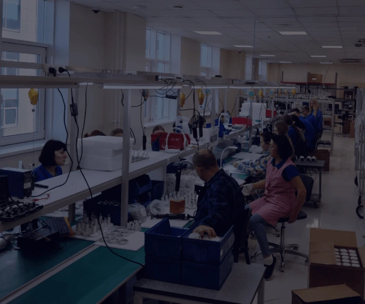
Разрабатываем оборудование и ПО. Локальная экспертиза помогает учитывать задачи заказчиков и развивать систему в долгосрочной перспективе.
Выпускаем камеры и видеорегистраторы. Создаём серийные продукты и специальные решения под требования конкретных объектов.
Проверяем продукцию в процессе сборки и проводим климатические испытания. Сведения о сертификатах и включении в реестр РЭП доступны для соответствующих моделей.
Обсудим ваш проект
Поможем выбрать оборудование и программное обеспечение, рассчитать проект или познакомиться с TRASSIR на демонстрации.